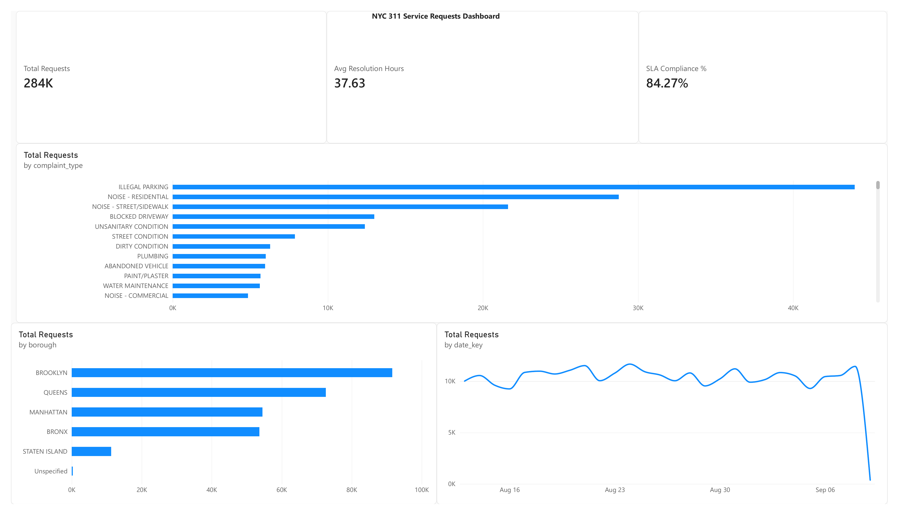

A relational database and Power BI dashboard built on real NYC 311 service request data, with an automated Python and SQL pipeline behind it.
NYC's 311 line handles millions of service requests a year, everything from noise complaints to broken streetlights. Response times vary a lot by agency, borough, and complaint type, but that variation is buried in raw city data. This project turns it into something a decision maker could actually act on.
This analysis asks which NYC agencies actually meet a 72-hour response window on 311 requests, and how wide the gap is between the agencies that do and the ones that don't.
A Python script calls the NYC Open Data (Socrata) API for 311 requests.
A scheduled GitHub Actions workflow runs that script weekly, no manual step required.
Data lands in a PostgreSQL star schema: one fact table, four dimension tables.
SQL with CTEs and window functions answers questions like agency ranking and month over month change.
Power BI connects to the database directly and models relationships, DAX measures, and the dashboard below.
NYPD closes 99.9% of its 311 requests within 72 hours. Housing Preservation and Development closes just 25.3%, a 74.6 percentage point gap between the fastest and slowest agencies in the dataset.
